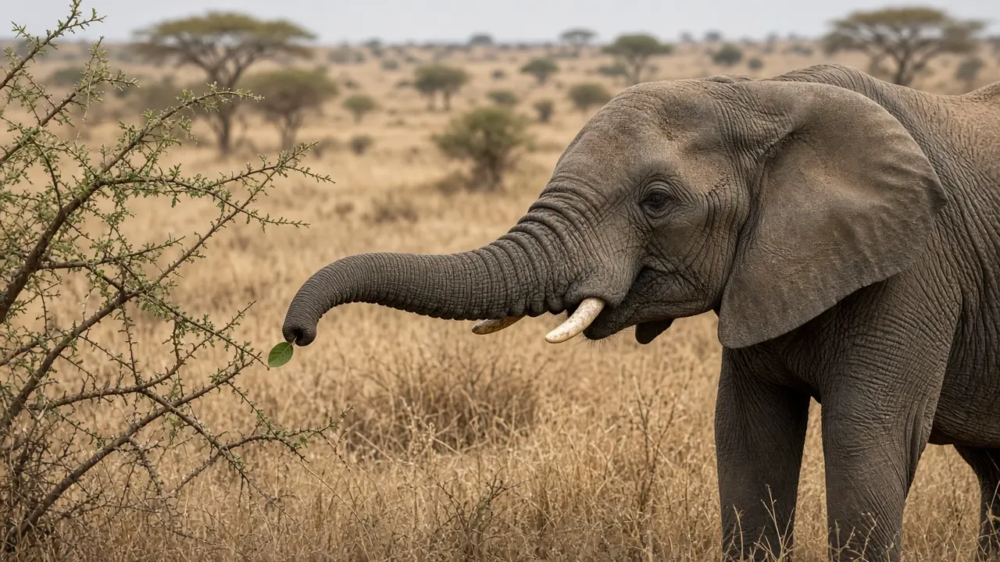

Why do male elephants leave the herd?
Male elephants leave the family they were born into as they approach adulthood, and the break is usually gradual. Asian males typically go between about 8 and 15 years of age. African savanna males reach full independence at about 13 to 14 years on average, anywhere from 7 to 19. Afterward they live alone or with other males, and they rejoin female families mainly to breed.

They leave around puberty, and not all at once
An elephant family is a female group. Related adult females, their daughters and the young sons travel together, and the sons are the ones who eventually go. The Smithsonian's National Zoo says male Asian elephants typically leave when they reach puberty, between 8 and 13 years of age. It calls the change gradual, pushed by the males' competitive and independent nature and by females who become less tolerant of rough behavior. A young male may follow the family for a while, then spend longer stretches away, before the split is complete.
African savanna elephants follow the same broad timetable, with a wide spread between individuals. The San Diego Zoo Wildlife Alliance library fact sheet says that near puberty males start leaving for extended periods, often to socialize with other families, and later disperse for good. Full independence is gradual. In Amboseli that process has taken from 5 months to as long as 8 years. Across Amboseli and Samburu the average is about 13 to 14 years, with ages from 7 to 19. Those are study-population summaries, not a birthday on which every bull must walk off. San Diego Zoo Wildlife Alliance puts the same step in practical terms: once a male can find his own food and protect himself, he no longer lives in the family herd. He may travel alone or with a small group of other males.
Females usually stay, with one important exception
The departure is about sons, not about breaking the family up. The Smithsonian says female Asian elephants remain in the family unit throughout their lives. The library's Asian elephant behavior fact sheet says young females stay with the natal group. Asian herds are small parties of related females, their daughters and still-immature males. The Smithsonian notes that these herds do not have one clear matriarch in the African savanna sense, although some females take a more dominant role. How those groups raise calves is covered in how elephant families raise calves, and the wider pattern is on the behavior page.
Bulls do not share that work. San Diego Zoo Wildlife Alliance says males do not take part in caring for the young. Milk, protection and the daily pace of the herd stay with the females, which is why a son can leave years before he fathers a calf.
African forest elephants do not fit a slogan that only males ever leave. The African fact sheet says both sexes gradually separate from the birth family. Daughters may go when they are close to having a first calf, or when their mother turns more care toward a younger sibling. The median age of independence reported there, for males and females together, is about 15 years, and full independence can lag the first separation by months or years. Forest families are also smaller than savanna ones, as the forest elephant page explains. Treating all three species as one social system hides that difference.
Leaving is not the same as being ready to breed
Puberty and fatherhood are far apart. The Smithsonian says wild Asian males and females can reach sexual maturity between 8 and 13, and females often have a first birth in their mid teens. Males, though, are unlikely to father a calf until their thirties, when they are large enough to compete with older bulls. By about age 30, most healthy males begin a regular period of raised testosterone and more aggressive, competitive behavior called musth. What that state looks like, and how long it lasts, is in what is musth in elephants.
Until then, and between musth periods, a male's company is mostly other males. The Asian fact sheet says males leave at about 10 to 15 years old to join a small all-male group or to live singly, and that adult males meet female herds mainly when a female is ready to breed. San Diego Zoo Wildlife Alliance describes mature bulls as quite social with one another, while visits to female families are short and for breeding. The African fact sheet says the same of savanna elephants: adult males usually meet females only briefly.
Bachelor groups are where younger males learn
Leaving the family is not the same as becoming solitary on day one. In a 2008 paper in Animal Behaviour, Kate Evans and Stephen Harris watched male African elephants in Botswana's Okavango Delta. The abstract, available through the Environmental Information Service Namibia, reports that adolescent males, ages 10 to 15 and 16 to 20, were the most sociable age group. They preferred larger groupings and stayed closer to other elephants, and the older of those adolescents tended to be more social still. Males of every age preferred a nearest neighbour who was at least 36 years old.
Evans and Harris argue that this closeness is a chance to learn from more experienced bulls. People often describe matriarchs as the memory of a breeding herd. The authors suggest mature males hold a similar store of knowledge inside bull society. The African fact sheet makes a related field observation: solitary adult males are common, but younger males, who know less about where to find food and water, are thought to follow older males and pick up that knowledge. Some adult males keep stable ties for a long time. Others are much less social. "Bachelor group" is a useful name, not one fixed club with a membership list.
Asian males have their own middle period. The Asian fact sheet says males between 20 and 30 tended to associate with the most other males, except during musth, when the search for females pulls them away. Male associations are generally shorter lived than the bonds among females. In India, all-male groups have been recorded more often where forest is broken into fragments, so the landscape changes how often males travel together.
Two social worlds for most of the year
The split keeps two different schedules from having to match every day. The Smithsonian ties male departure to competitiveness and to females' lower tolerance for rough behavior. San Diego Zoo Wildlife Alliance notes that bulls do not raise calves and that mature males visit female families only briefly, to breed. The Asian fact sheet adds that males in musth range over considerably larger areas than males who are not in musth, which fits a search for mates. For most of the year, female families and male company are separate.
Older males are part of that arrangement, not spare animals. Evans and Harris, and the African elephant fact sheet, describe them as the bulls younger males stay near and can learn from. Ages and group sizes vary by species and by place. The pattern the zoos and the field studies agree on is simpler: sons grow up in a female family, leave it over time, and build the next stage of life among other males. The Asian elephant, savanna elephant and conservation pages set that split beside the other pressures on wild elephants.
Frequently asked questions
At what age do male elephants leave the herd?
Asian males typically leave between about 8 and 13 years (Smithsonian's National Zoo) or about 10 to 15 (San Diego Zoo Wildlife Alliance library). African savanna males average about 13 to 14 years in Amboseli and Samburu, with a range of 7 to 19, and the process can take months or years.
Are male elephants kicked out in one day?
No. Published accounts describe a gradual shift. Males spend more time away as they become independent, and females become less tolerant of rough behavior.
Do males live alone after they leave?
Some do. Many younger males join loose all-male groups. Older males spend more time alone. Adult African forest elephant males usually live singly outside the breeding season and rarely form bachelor groups.
Do female elephants leave too?
Asian females and African savanna females usually stay in the birth family. African forest elephant females often disperse as well. A fact sheet gives a median age of independence of about 15 years for forest elephants of both sexes.
Does leaving mean a male is ready to breed?
Not fully. Sexual maturity can begin in the teens, but the Smithsonian says wild Asian males are unlikely to father a calf until their thirties, when they can compete with older bulls. Musth, a later surge in testosterone, is a separate state.
Sources
- Smithsonian's National Zoo and Conservation Biology Institute: Asian elephant
- San Diego Zoo Wildlife Alliance: Elephant
- San Diego Zoo Wildlife Alliance Library: African elephants fact sheet, behavior
- San Diego Zoo Wildlife Alliance Library: Asian elephant fact sheet, behavior
- Evans, K. E. and Harris, S. (2008). Adolescence in male African elephants, Loxodonta africana, and the importance of sociality. Animal Behaviour 76(3): 779 to 787. Abstract record, Environmental Information Service Namibia.
Cite this page
APA
TuskWise. (2026, November 20). Why do male elephants leave the herd? https://tuskwise.com/blog/why-do-male-elephants-leave-the-herd.html
MLA
“Why do male elephants leave the herd?” TuskWise, 20 Nov. 2026, tuskwise.com/blog/why-do-male-elephants-leave-the-herd.html.
Chicago
TuskWise. “Why do male elephants leave the herd?” TuskWise. Last modified November 20, 2026. https://tuskwise.com/blog/why-do-male-elephants-leave-the-herd.html.